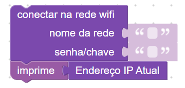
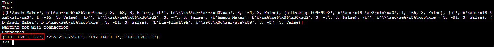

Conectividade e internet
Nesta Seção
A conectividade é um elemento essencial para projetos modernos de IoT, robótica e automação. No dBlocks, é possível conectar a placa à internet usando Wi-Fi, ou criar uma rede própria via modo ponto de acesso. Isso abre portas para controlar dispositivos remotamente, acessar servidores web, enviar dados para a nuvem, ou mesmo criar interfaces locais.
Com esses recursos, você pode desenvolver projetos como: controle de lâmpadas e relés via celular, sensores que enviam dados para dashboards, alarmes que disparam notificações em rede, ou até um servidor local acessado por qualquer dispositivo conectado à rede da placa.
Os blocos para conexão estão localizados na categoria Comunicação → Wifi. Eles permitem se conectar a uma rede existente, configurar a placa como um ponto de acesso, obter o IP atual e listar redes disponíveis.
Blocos para Wi-Fi e Acesso
- Conectar na rede Wi-Fi: insira o nome e a senha da rede para conectar a placa ao roteador local.
- Configurar Modo Ponto de Acesso: cria uma rede Wi-Fi com nome e senha definidos, permitindo que outros dispositivos se conectem diretamente à placa.
- Listar redes Wi-Fi: mostra no console todas as redes detectadas no ambiente.
- Endereço IP Atual: retorna o IP da conexão atual (modo cliente).
Conectando a uma rede Wi-Fi

Este bloco conecta a placa a uma rede Wi-Fi usando o nome (SSID) e a senha informados. É ideal para projetos que exigem acesso à internet ou comunicação com outros dispositivos na mesma rede.
Após executar o programa, o console exibirá o processo de conexão com a rede. Você verá mensagens como Waiting for Wifi connection e Connected, indicando que a placa foi conectada com sucesso.
Ao conectar a placa em uma rede Wi-Fi, ela passa a fazer parte da rede local do seu roteador — assim como seu celular e computador. Isso permite que todos os dispositivos conectados à mesma rede se comuniquem entre si, incluindo a placa.
Esse cenário é ideal para projetos em que você deseja acessar a placa a partir de outro dispositivo, como um celular enviando comandos para acender um LED, ou um computador acessando uma interface web hospedada pela placa.

Verificando o IP
Após a conexão bem-sucedida, a placa recebe automaticamente um endereço IP atribuído pelo roteador. Esse IP identifica a placa na rede e pode ser usado para acessá-la em projetos com servidor web, envio de dados ou comandos remotos.
Para visualizar esse endereço, basta usar o bloco “Endereço IP atual” junto com o bloco “imprime”. Quando o programa for executado, o IP será mostrado diretamente no console.
Esse IP será muito útil em projetos que envolvam comunicação entre dispositivos, como servidores locais ou envio de dados. Com ele, é possível configurar interações mais complexas na rede, como envio de comandos ou visualização de dados em tempo real.
Exemplo: criando uma rede com a placa
Esse bloco transforma a placa em um ponto de acesso, criando uma rede Wi-Fi própria. Outros dispositivos podem se conectar diretamente a ela sem depender de um roteador externo.
Verificando o IP da rede criada
Após executar o bloco, acesse o console e digite o seguinte comando para descobrir o IP da rede criada:
print(ap.ifconfig())
Próximos passos
Agora que sabemos conectar a placa ou criar uma rede própria, usaremos essa funcionalidade em conjunto com blocos de servidor HTTP para criar aplicações interativas, como controle de LEDs por navegador.